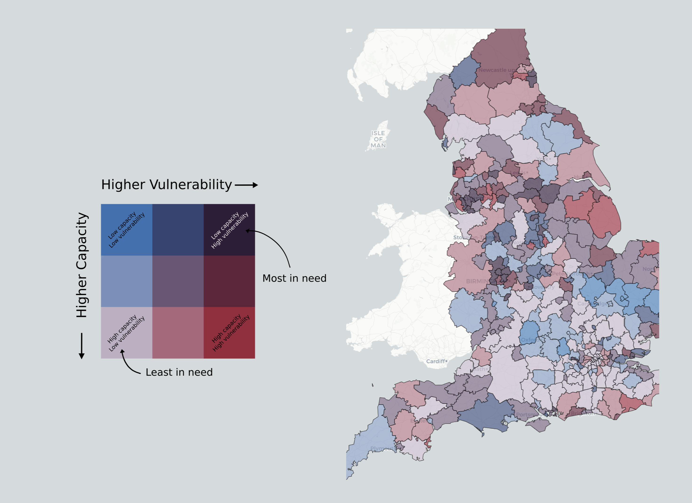
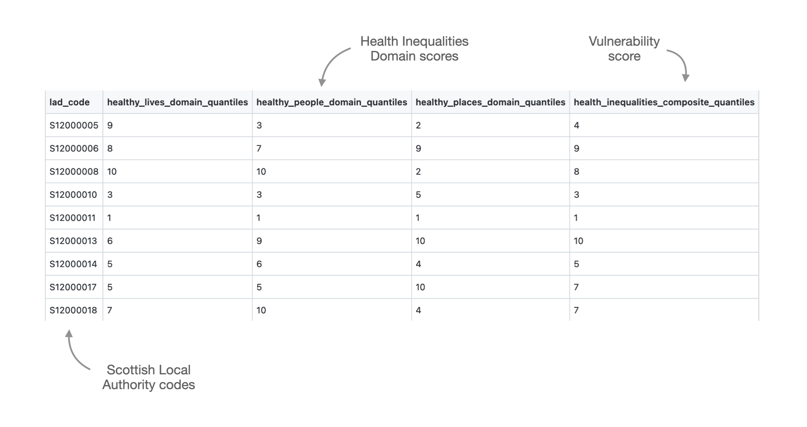

2 Overview
2.1 Introduction
2.1.1 What does it do?
The Resilience Index maps Local Authorities based on potential need for support (vulnerability) and capacity to meet that need.
2.1.2 What is covered
There are two indices, based on the British Red Cross’s strategic causes:
- Disasters & Emergencies
- Health Inequalities
We are not developing a Resilience Index for Displacement & Migration, due to the sensitive nature of asylum and resettlement data. Instead, we are producing bespoke analyses to inform this strategic cause.
2.2 Output (Maps)
- Eight maps in total, comprised of two indices, across four nations.
- Each map is specific to a single strategic cause and nation and presents a resilience score:

2.3 Output (Data tables)
- Data tables will also be available with indicator scores, domain scores, vulnerability & capacity scores, and overall resilience scores:

2.4 Calculating Resilience
- Indicators are combined to form domains, which are then combined to form capacity & vulnerability scores, which are then compared side-by-side to form a resilience score.

2.5 FAQ
2.6 Status
The Resilience Index is currently under active development, and only exists in a limited capacity at this time. Check the metadata files in
/Rto see the progress of each cause in each nation.Last update: 07.02.2022
Notes: complete segments are only provisional and are subject to change (e.g., indicator amendments and weighting)
| Nation | Strategic Cause | Vulnerability | Capacity | Shocks |
|---|---|---|---|---|
| England | Health Inequalities | :heavy_check_mark: | :heavy_check_mark: | :no_entry_sign: |
| England | Disasters & Emergencies | :construction: - Under development | :construction: - Under development | :heavy_check_mark: - Heat Hazards |
| Scotland | Health Inequalities | :heavy_check_mark: | :x: | :no_entry_sign: |
| Scotland | Disasters & Emergencies | :heavy_check_mark: | :x: | :heavy_check_mark: - Heat Hazards |
| Wales | Health Inequalities | :construction: - Under development | :x: | :no_entry_sign: |
| Wales | Disasters & Emergencies | :heavy_check_mark: | :x: | :x: |
| Northern Ireland | Health Inequalities | :heavy_check_mark: | :heavy_check_mark: | :no_entry_sign: |
| Northern Ireland | Disasters & Emergencies | :heavy_check_mark: | :construction: - Under development | :heavy_check_mark: - Fires & Floods |
To add:
- How to find metadata
- Development Status
- Interpreting the results and tables
- Embed HTML Widget app